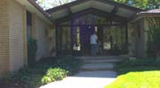

Adding a Ramp
Most homes will need at least a small ramp for accessibility. Keep in mind not only will wheelchair users need a ramp but individuals who use walkers or canes, strollers, or have shortened strides will appreciate the lack of stairs. Even furniture movers will be happy they aren't carrying heavy furniture and appliances up large stairways. Ground level entries can be appreciated by almost everyone.
For many individuals using wheelchairs or walkers the difference between being able to access a doorway, or not, may often be measured in mere inches. Attention to detail can make the difference between achieving entry or excluding, or even injuring, someone. When the ADA's Wheelchair Accessible Construction Requirments for wheelchair accessible construction are not met, the results often limit or exclude entirely a person with a disability. Many times these failures can also be dangerous to everyone using the ramp.
Before beginning a ramp project do your homework. For ease of reference we recommend the following sources:
- For ADA Regulations, Information, Design Standards, Publications or Technical Assistance, log on to www.usdoj.gov/crt/ada.
- For more information regarding ramps we also recommend viewing the following publication: Wood Ramp Design: How to Add a Ramp That Looks Good and Works, Too (pdf version) www.ncsu.edu
- ADA Accessibility Guidelines for Buildings and Facilities www.access-board.gov
Here are a few points to consider as you begin your ramp project.
Common Errors in Wheelchair Accessible Construction
- Landing areas are too small. Wheelchair users must be able to stay on a flat, level surface and still open a door without rolling back into slopped sections of the ramp. This prevents roll offs. Adequate maneuvering clearance must be provided at all doors both in front and to the side.
- Landing areas where ramps change directions, such as 90' turns or switch backs, are too small. Wheelchair users are unable to go up or down the ramp because they are unable to make the turn on a level surface. This makes the ramp unusable. Again, the minimum landing size should be 60 inches by 60 inches.
- Improper door handles. Door handles, pulls, latches, locks, and other operating devices on doors at the top of a ramp (considered by the ADA as an "Accessible door" see ADA 4.13.9) must have an easy to grasp shape. It should be graspable with only one hand and not require tight grasping, pinching or twisting of the wrist to operate. Optimal hardware consists of lever-operated mechanisms, push type and U-shaped handles. If using a sliding door operating hardware MUST be exposed and useable on BOTH sides of the door.
- Improper slope. ADA requires ramp slopes be 1:12. Twelve inches of horizontal slope for every inch of vertical rise. Example: If the level from the doorsill to the ground is 15 inches the ramp MUST be a minimum of 15 feet. When a walkway or other pedestrian surface has a slope of greater than 1:20, is more difficult to maintain control of a wheelchair. Wheelchair users may not be able to climb up the slope without having to use railings. Individuals using crutches, walkers or canes may loose their balance and falls may result.
- Improper, or missing, railings. It is absolutely imperative that ramps be outfitted with proper railings or edge protection. Edger protection may be used for smaller, broader ramps, while those rising at steeper angles and longer distances will require railings. Lack of railings or edge protection can result in injury if a wheelchair user rolls off the side of the route. Individuals using walkers, canes and crutches may likewise suffer injuries from falls where railings are not present. Railings must be periodically checked to ensure they are intact and in good repair.
- Ramp is too narrow. Most ramps should be no narrower than 36 inches. Allow space for manual wheelchair users to maneuver their hands on the OUTSIDE edges of their wheels.
- Doorsill/Threshold is too high. Where possible doorsills should be an even transition from outside to inside. In some instances it may be necessary to countersink a doorsill. This will prevent tripping and allow wheelchair users easier roll over thresholds.
The following graphics are samples of a ramp proposal that was submitted as part of a grant application. Note the slope, safety features and overall design of the ramp. This project was approved for a state funded grant and built for the family shortly thereafter.
| Ramp Sample |
|  |
 |


{kind=link}
{kind=link}
{kind=link}
{kind=link}